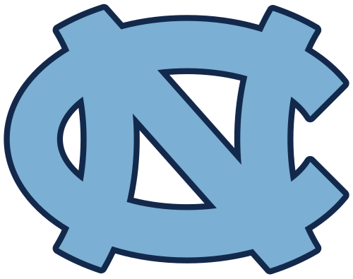

About Me
Hello! I am Feng Lin, an M.S. student in Machine Learning at the School of Computer Science, Carnegie Mellon University (expected December 2026). Previously, I received my B.S. from the University of North Carolina at Chapel Hill, double-majoring in Statistics and Analytics and Economics with a minor in Cognitive Science.
My research interests lie in machine learning and causal inference, with a focus on understanding model behavior under real-world challenges such as data imbalance and mismeasured treatment. I have worked on topics including probability calibration in unbalanced classification, multimodal recommendation systems, and treatment effect estimation under measurement error.
Education
Carnegie Mellon University
Expected Dec 2026
M.S. in Machine Learning, School of Computer Science
GPA: 4.00 / 4.00

University of North Carolina at Chapel Hill
Aug 2021 – May 2025
B.S. in Statistics and Analytics & Economics (double majors); Cognitive Science (minor)
GPA: 3.99 / 4.00
Undergraduate thesis — Highest Honors
Experience

Shenwan Hongyuan Group Co., Ltd
May – Aug 2024
Data Science Intern · Beijing
Projects
LLM-Augmented Retrieval for Product Recommendation (Amazon Reviews 2023)
Jan 2026 – Present
- Retrieval pipeline with HyDE-style hypothetical document embeddings.
- Multimodal item embeddings (CLIP) + FAISS indexing.
- Synthetic LLM queries from interaction history and reviews.
- Evaluated with Recall@K and NDCG@K.
Single-Hop Question Answering with Classical and Transformer-based Retrieval
Aug – Dec 2025
- End-to-end QA benchmarking TF-IDF, BM25, sentence encoders, and BERT-family models.
- Fine-tuned transformers on SQuAD 2.0 with wandb tracking.
- Ablations: up to ~2.7× gains in sentence retrieval accuracy with stable end-to-end latency.
LLM-Based Hierarchical Video Understanding for Anomaly Detection
June – Aug 2025
- VideoTree + GPT-4 reasoning on UCF-Crime.
- Improved AUC 0.742 → 0.853 with 38% fewer captions and 17% lower latency.
Saliency Maps for Semantic Segmentation in Dashcam Images
Aug – Dec 2024
- Combined saliency maps from CNN, GAN, and Transformer models in a U-Net pipeline.
- +13.1% car-class pixel accuracy; −25% pedestrian detection variance.
American Bar Association Legal Service Supply Shortage
Mar 2024
- Two-stage risk ranking with LSTM, SVM, and KNN (82% recall on underserved regions).
- Causality-informed feature engineering improving downstream prioritization by 27%.
Publications
-
On Probability Estimation for Unbalanced ClassificationJournal of Statistical Theory and Practice, Springer Nature (2026). Accepted.
-
Striking the Right Balance: Systematic Assessment of Evaluation Method Distribution Across Contribution TypesBELIV Workshop, IEEE VIS (2024)